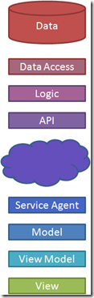

The adventure continues
Wednesday, October 26th, 2011Please follow me over to qedcode.com.
Twitter Replies
Archives
BooksMetaCommunity |
Archive for the ‘Uncategorized’ CategoryThe adventure continuesWednesday, October 26th, 2011Please follow me over to qedcode.com. Remembering SteveThursday, October 6th, 2011My adventure, like so many others of my generation, started on a plastic box built by two guys named Steve in a garage in Los Altos, California. My sister came home from the first day of high school and told us about these amazing machines that she was working with. You could give these things simple instructions, and they would follow them. Put enough of these instructions together, and it does whatever you want. The next time I went to the mall department store, I saw one of these computers. I played with it until I had a square bouncing around the screen. It went something like this: 10 x = 0 20 y = 0 30 dx = 1 40 dy = 1 50 putchar(" ", x, y) 60 x = x + dx 70 y = y + dy 80 putchar("*", x, y) 90 if x <= 0 or x >= 39 then dx = -dx 100 if y <= 0 or y >= 39 then dy = -dy 110 goto 50
The syntax is wrong, but the spirit is right. I typed in variations of this program on several subsequent visits. I added gravity at some point, but I never saved the program. I always typed it in fresh from memory. I started writing code on paper. This code wouldn’t run on any real machine, only the one in my head. My parents saw this and decided that it was time I got a chance to save my programs. They bought me an Apple II+ with a floppy drive. I wrote more and more complex programs. I started looking at the machine code and comparing it to the assembly listing in the back of the Apple II users manual. I still remember the comments in that code with the author’s name: Steve Wozniak. I could see the actual loop that made the cursor blink. Eventually, my Dad got me a subscription to Byte magazine. He also got me the Apple Macro Assembler and a second floppy drive. You had to put the assembler disk in one and write your program on the other. After that first machine, I went on to an Apple IIe, various “IBM Clones”, and finally became a professional Windows programmer. I came back to Apple when I discovered that a MacBook Pro was the best available laptop for running Vista. I still use that 2007 MBP today (running Windows 7, and with a hard drive and memory upgrade) as my primary machine. Steve Jobs and Steve Wozniak (and my Dad, of course) fed my love for software and helped start this adventure. And now one of them is gone. Let us continue the adventure in his honor. User identity on Windows Phone 7Friday, March 11th, 2011When you can challenge another person to a Faceted Reversi game, you provide their name. So Reversi needs a way of authenticating the user so it can send them the correct games. I didn’t want the user to have to enter a password to play my game, so I relied upon the anonymous Live ID already available on the phone. I just have to associate your anonymous ID with your chosen screen name. Windows Live provides identityOnce I’ve gotten the anonymous Live ID using the technique I previously blogged about, I create an Identity fact. An Identity is defined in the factual model as: fact Identity {
string anonymousId;
Claim* claims {
Claim c : c.identity = this
}
}
The anonymoudId string is the only field in an Identity. That means that it comprises the entire key of that fact. No matter how many times I construct an Identity with that anonymoudId, it will be the same instance. The Identity instance is created and added to the Community. _community = new Community(storageStrategy) .AddAsynchronousCommunicationStrategy(new POXAsynchronousCommunicationStrategy(configurationProvider)) .Register<CorrespondenceModule>() .Subscribe(() => _identity.Claims); string anid = UserExtendedProperties.GetValue("ANID") as string; string anonymousUserId = String.IsNullOrEmpty(anid) ? "test:user12" : "liveid:" + ParseAnonymousId(anid); _identity = _community.AddFact(new Identity(anonymousUserId)); The first time you run the app, it creates this Identity instance. Every subsequent run is simply loading it from isolated storage. Notice that I’m subscribing to _identity.Claims before the _identity is even instantiated. The subscription is a lambda expression, so it will be executed later. So what are Claims? A user claims a nameA Claim is the desire for a person to have a specific user name. It is defined in factual as: fact Claim {
publish Identity identity;
User user;
publish IdentityService identityService;
ClaimResponse* responses {
ClaimResponse r : r.claim = this
}
bool isPending {
not exists ClaimResponse r : r.claim = this
}
}
The Claim refers to the Identity from the phone, and the User that is being claimed. A User is: fact User {
string userName;
Claim* claims {
Claim c : c.user = this
}
}
Just like Identity, User has only one field. This field is its key, so any User object that I create with userName = “michael” will be the same instance. This is what makes it possible to challenge another user: the User instance I create on my phone will be the same as the one that he creates on his phone. A service approves and denies claimsSo when the user selects a name, a Claim is created. This Claim is published to an IdentityService, which is defined as: fact IdentityService {
Claim* pendingClaims {
Claim c : c.identityService = this
where c.isPending
}
}
Notice that IdentityService has no fields. Since fields define identity in Correspondence, there is nothing to distinguish one IdentityService from another. Every time I create a new IdentityService, I get back the same instance. It is a singleton. There is a subscriber on my server looking for Claims published to the IdentityService. When it finds a Claim, it verifies that the user name is not taken by another Identity. It will then generate a ClaimResponse: fact ClaimResponse {
publish Claim claim;
int approved;
}
This response is published to the Claim. Remember the lambda expression in the Community Subscribe method? The phone has subscribed to all Claims attached to the Identity. That means that the ClaimResponse will be pushed to the phone, and the user will know whether it was accepted or rejected. This is an example of the Service pattern in Historical Modeling. With this pattern, I can allow people to choose their own name, but still rely upon Windows Live to authenticate them for me. Flip pieces on the way outWednesday, March 9th, 2011I recently released Faceted Reversi, the first Windows Phone 7 application based on the Correspondence framework. Let me take a few posts to tell you how it works, and how you can build your own Correspondence application. Faceted Reversi is, of course, a Reversi game. Reversi pieces have two sides: black and white. Each color represents one player. When a player moves, he places a piece with his color up. He then flips all of the enemy pieces that were flanked by that move. When we describe the rules, we say that the player flips the pieces as he makes a move. This is in fact not how the code is written. On a players turn, all the program does is record the move. Pieces are flipped on the way out. GameBoard and GameStateThe game logic is controlled by two classes: GameBoard and GameState. A GameBoard is an immutable object that records a fixed board position. A GameBoard can tell you:
Or saying the same thing in code: public class GameBoard { public static GameBoard OpeningPosition { get; } public int MoveIndex { get; } public PieceColor PieceAt(Square square); public PieceColor ToMove { get; } public int BlackCount { get; } public int WhiteCount { get; } public IEnumerable<Square> LegalMoves { get; } public GameBoard AfterMove(Square square); } GameState, on the other hand, is mutable. It records the current GameBoard and lets the user make a move. The separation of immutable state from mutable state is significant. It makes it clear that the board position is dependent upon the sequence of moves. We represent that dependency using Update Controls. The current position is governed by a Dependent sentry that runs UpdateGameBoard when it becomes out-of-date. public class GameState { private Game _game; private GameBoard _gameBoard; private Dependent _depGameBoard; public GameState(Game game) { _game = game; _depGameBoard = new Dependent(UpdateGameBoard); } public PieceColor PieceAt(Square square) { GameBoard gameBoard = GetGameBoard(); return gameBoard.PieceAt(square); } private GameBoard GetGameBoard() { _depGameBoard.OnGet(); return _gameBoard; } private void UpdateGameBoard() { _gameBoard = GameBoard.OpeningPosition; if (_game != null) { List<Move> moves = _game.Moves.ToList(); moves.Sort(new LocalMoveComparer()); int expectedIndex = 0; foreach (Move move in moves) { if (move.Index != expectedIndex) return; if (move.Player.Index == 0 && _gameBoard.ToMove != PieceColor.Black) return; if (move.Player.Index == 1 && _gameBoard.ToMove != PieceColor.White) return; Square square = Square.FromIndex(move.Square); if (!_gameBoard.LegalMoves.Contains(square)) return; _gameBoard = _gameBoard.AfterMove(square); ++expectedIndex; } } } } UpdateGameBoard runs through the list of moves in the game, sorted by move index. It validates each move against the current position. If an invalid or out-of-place move is found, it just gives up. The assumption is that moves were validated before they were added to the game, but we don’t want to crash the app or enter an invalid state if something goes wrong. Record a moveSo what happens when the player makes a move? Simple: public partial class Player { public void MakeMove(int index, int square) { Community.AddFact(new Move(this, index, square)); } } All we do is record that move. This adds it to the Moves collection in the game, stores it in the local database, sends it to the other player, and makes GameBoard out-of-date. Let’s break that down. Publish a move to other subscribersThe Move fact is declared in a language called “factual”, specifically designed for Correspondence. fact Move {
Player player;
int index;
int square;
}
Adding a fact to the Correspondence community stores it in the local database. It also sends the fact to the server, which forwards it to all interested subscribers. We can tell that the other player is interested because he subscribed to the Game. _community = new Community(storageStrategy) .AddAsynchronousCommunicationStrategy(new POXAsynchronousCommunicationStrategy(configurationProvider)) .Register<CorrespondenceModule>() .Subscribe(() => _identity.ApprovedUsers .SelectMany(user => user.ActivePlayers) .Select(player => player.Game) ); The linq query in the Subscribe call returns all of the Game facts that the player is currently involved in. When a player subscribes to a game, the server will send him all of the published facts. A Player fact is published to a game, as indicated by the “publish” keyword in the factual model. fact Player {
publish User user;
publish Game game;
int index;
}
A Move fact belongs to a Player, so it is pushed as well. This is how Correspondence knows to send the move to the other player. Update the UI when a move arrivesSo when the move reaches the other player, how does the game know to refresh the board? The Game fact queries for related moves, again in the factual model. fact Game {
unique;
Move* moves {
Move m : m.player.game = this
}
}
This makes _game.Moves a live collection. Whenever a fact is added, whether on this phone or from another one, this collection changes. Update Controls recognizes that GameBoard depends upon this collection. So when it changes, GameBoard becomes out-of-date, and Update Controls notifies the view to redraw itself through data binding. All Correspondence applications work this way. State changes cannot be side-effects of a user action. Instead, the program simply has to store the user action into the model. State changes occur on the way out, back toward the user interface. They are dependent upon the history of user actions. It doesn’t matter if the move comes from the user interface, from the local database, or from another user. Flipping the pieces is not a side-effect of making a move. It is dependent upon the sequence of moves, regardless where they come from. How not to sell a two-player game on Windows Phone 7Thursday, March 3rd, 2011Last week I launched Faceted Reversi, a two-player strategy game for Windows Phone 7. In this game, you play Reversi against other people who have also downloaded the application. It uses Correspondence to coordinate moves between the two phones. So far the adoption has been … slow.
Faceted Reversi has two ways to play:
In pass-the-phone, you play against another person, but the two of you sit together and share a device. It just acts like a game board. In remote mode, you play against somebody else with their own device. Think “Words with Friends”. To begin a remote game, you either pick someone that you know or let the server choose a random player. Faceted Reversi is priced at $1.99, and has a trial mode. In trial mode, you can play as many pass-the-phone games as you like. But you can only play one remote game. To unlock the ability to play more games, you have to pay. There are a couple of problems with this revenue model. First, trial apps don’t appear in the Free section of the Marketplace. And second, the network is a catch-22. Free vs TrialNeither iOS nor Android has trial mode built into their applications. You have to buy it before you can try it. As a result, many developers published two versions of their apps: the free one and the paid one. Windows Phone implemented the trial feature to solve this problem. A developer can publish one application, yet still give the end user both experiences. But Windows Phone also has a Free section in the Marketplace. This section includes applications that have a $0.00 price tag. It does not include applications with a trial mode. Many developers have found that people download apps from the Free section much more frequently than they do from the paid sections. As a result, developers have been abandoning the trial model and publishing two versions of the app. Catch-22The only reason to pay for Faceted Reversi is to play games against the network of people who have also paid for Faceted Reversi. The value of the application is proportional to the size of this network. When nobody has bought the app, nobody is in the network. And when nobody is in the network, nobody will buy the app. The only way to get people to buy the app is to seed the network. Faceted Reversi FreeTo solve these two problems, I am working on Faceted Reversi Free. This will be a completely separate app. It will be priced at $0.00, so it will appear in the Free section of the Marketplace. This should drive higher download numbers. I don’t think that a full order of magnitude increase (i.e. 40) is unreasonable to expect. This version of the game will have only one feature: random player. You will be able to play against another player, but you won’t be able to say who. This will have the effect of seeding the network with a sea of random players … at least 40 of them! This version will also serve ads. Before each game, it will display an ad while it waits for the server to select a random player. This should provided some revenue to keep the Correspondence server running, and incentivize people to buy the paid version. In upcoming posts, I’ll describe how to build a two-player game with Correspondence. I’ll also keep you posted regarding the uptake of Faceted Reversi Free and whether my clever scheme succeeds. Itzben on NuGetTuesday, February 15th, 2011Do you need a Silverlight or Windows Phone 7 TextBox to update on every key? Do you need to data bind a visual state or a set of radio buttons to an enumeration? How about making a control visible whenever a property is equal to a certain value? Itzben is a collection of universally useful XAML behaviors, value converters, and styles. Open the Assets tab in Blend and drag them onto your art board.
There are four ways to enjoy Itzben. NuGet PowershellJust open the NuGet Package Manager Console and type: install-package itzben Or if you are in a Windows Phone 7 project: install-package itzbenwp7 NuGet DialogDon’t do Powershell? Just Add Library Package Reference:
Zip fileDon’t want to install NuGet? Just download the zip file from Codeplex. Find the Itzben.dll for your project type. Source codeDon’t want to take a dependency on a third-party library? I’m with you. Every Itzben class is self-contained. Just go to the Codeplex Source Code page, pick the class you want, and copy it directly into your project. ContributePlease enjoy this collection. It was created as a way to stop writing the same code in every project. And if you have a behavior, value converter, or style that you find universally useful, please open an issue and we’ll include your patch. Turn software architecture on its earMonday, January 31st, 2011Software architectures have evolved since the first computers were put to use. Early computer operators would hardly recognize the systems we build today. Architecture continues to evolve at a pace where we will not recognize the systems of tomorrow.
Then the personal computer revolution hit and a computer became a briefcase-sized box sitting on your desk with a television on top. People could run their own logic on their own data without having to lease space on the mainframe. Rather than building custom programs for every need, people could buy applications. Thus the software industry was born.
Then rich web applications brought interactivity and power back to the personal computer. The browser gained the ability to run JavaScript, making the dumb terminal a little bit smarter. This trend continued with Flash, JQuery, and Silverlight. Smart phones broke the user experience out of the browser and moved it into apps. Apps had some of the benefits of browser-based clients in that they were quicker to develop, and easier to deploy. But they also were like an application in that they were useful offline.  This is our current state of software architecture. The data still resides in a large noisy machine in a windowless room, but we have installed layers of access in front of it. We can call an API – whether it be REST or Web Services – to invoke the business logic and access that data. We have a service agent on the client side – perhaps AJAX or RIA Services – to invoke that API. It brings back a model – JSON or XML converted into objects – that we can translate through a view model and display on a view. Writing software today, it seems like we’ve always done it this way. But it was only 50 years ago that we started on this journey. Some of the people who made the earliest advances are still with us now. Where we are goingTake a look at the work of people like Udi Dahan, Greg Young, and Ayende Rahein to see the next step in this architectural evolution. Look at where NoSQL projects like MongoDB and CouchDB are leading us. This architectural stack is about to be turned on its ear. One of the big problems that we are about to solve is the synchronous nature of our current APIs. REST and Web Services are based on the idea of request/response. Synchronous protocols have scaling and reliability issues. Udi and Greg are proposing new ways of creating asynchronous services. Another problem that we are working on is impedance mismatch. The database is relational. The logic is object-oriented. The API is document-oriented. And the view is a scene graph (HTML or XAML). At every layer, we have to map one format onto the next. NoSQL databases skip the relational and object-oriented layers and go straight to documents. Microsoft’s data binding, John Resig’s JQuery, and Steve Sanderson’s Knockout bridge the object/scene graph gap. What will the architectural diagram look like in 5 years? I have a guess, but I can’t say for sure. The only thing certain is that it will look nothing like it does today. TDD DojoThursday, January 6th, 2011I’ve been conducting lunch classes at work to help us improve the confidence in our software. I call these sessions “Q.E.D.”, based on my foundation in mathematics and my practice of applying mathematical proof to software (see my other blog qedcode.com). In the past, these have been lectures, where I present mathematical concepts like Degrees of freedom, Closure, or how to write Provable APIs. These sessions have earned me the nickname “Professor”, which I answer to proudly. But lately, I’ve been thinking it would be better for the team if I were a “Sensei” instead. The end of lectures
Then I would assign homework. Make this unit test pass, or refactor that API to make it more provable. People would do the homework individually and email me the results. At the beginning of the next class, I would choose the person who did the best homework and recognize them with the Yoda Award. They get to keep Yoda at their desk until next week’s class. The main problem I saw with this kind of session was that not many people were putting the concepts into practice. Only two or three people would email me homework each week. It was a different set of people each time, so I wasn’t concerned about particular individuals. But work and other obligations got in the way, people didn’t seek help from me or each other, and the week just slipped by. To solve this problem, I decided that we should do homework in class. When thinking about how practically to do that, I remembered the evenings I spent at a local meetup group called Geek Night, hosted at Thought Works and led by local Though Worker Paul Hammant. At Geek Night, we pair program on open source projects. To get people practicing together, we need the pair programming bit more than the open source bit. So I decided to have them pair on very simple exercises at first. We are starting off with the Bowling Game Kata. But instead of solving the whole thing, I’ve broken it down. The original kata has you write test like “When I roll 20 gutters, my score is zero” and “When I roll 12 strikes, my score is 300.” That’s too big, in my opinion. The problem should be broken down into testable pieces that you can then assemble into a working solution. The first piece that we are working on is a class called GameData. This class will record all of the rolls. It will eventually be used by the Frame class, which will observe rolls by index. This leads to a number of simpler test, like “there are initially no rolls” and “after one roll, you can retrieve the first roll by index.” With that inspiration, I closed the classroom and opened a dojo. In a martial arts dojo, the sensei doesn’t stand at the front. He walks around and interacts with the students. The students work individually or in pairs on routine forms. The sensei will call out commands, and correct individual students on their form. The rules of the dojoI brought in a deck of cards. I leave two cards of the same value on each desk (for example the 3 of hearts and the 3 of spades). The other two (3 of clubs and 3 of diamonds), I put in a deck near the door. When you enter the room, you take a card. You sit at the table with that value. This creates up to 13 pairs. I have on average 12 people attend, so I only used Ace through 6. If we have extra people, then we create additional pairs. If we have empty chairs, we consolidate. And if we have an odd number of people, one pair becomes a triple. Each person brings a laptop with Visual Studio 2010. They have all pulled the same solution from TFS and mapped it to their drive. When we are in the dojo, we cannot connect to the network. So we all open the solution and select “Go Offline”. I give the group a requirement to test. For example, “Given a GameData class, the Rolls collection should initially be empty.” One person writes that test, which should initially not compile (the test uses a property that the code doesn’t have yet). The other makes it compile (by adding the GameData.Rolls property), sees it fail, and then makes it pass. I walk around the room observing how each pair is doing. If they write working code without seeing the test fail, I ask them to delete the code and see the failure. If they are leaving sloppy tests behind, I ask them to refactor. If they are using the debugger, I ask them to make the test fail in such a way as to tell you why it failed. And if their test names don’t reveal their intention, I ask them to rename them. When every pair has the test working, I call out the next test. “When I add a roll, I can get that roll by index 0.” The person who wrote the code last time writes the test this time. Then they pass it off to their partner to write the code. In the first hour, we were able to get through 4 tests. This included learning the rules of the dojo, setting up the project (for those who didn’t come prepared), and leaving 10 minutes at the end. During the last 10 minutes, I ask each pair to bring their laptop to the projector and show us their tests. We all ask questions about the tests and the code. The pair defends their naming, their refactoring, and their implementation. “The test”, I explain, “is the example that you give to the consumers of your API. It says, ‘I want you to use this class in this way.’ Is this the way you want people to see your API?” Finally, each pair selects one other pair that has the best code. They cannot select themselves. The pair must vote as one. They write down that pair’s number (Ace through 6 in my case). Then we reveal the votes and decide the winner. The winners get to share Yoda for the week. When they get back to their desks, they hit the “Go Online” button to reconnect the solution to TFS. The winning pair gets to check in their code. Everyone else must roll back. Then next week, everyone gets latest and starts from there. This encourages people to vote for the code that they want to work on. The reaction so farPeople really seemed to enjoy the first session. More importantly, it was the most engaged that I saw them since we started these lunches. All of the pairs made some pretty basic mistakes. Not all of them realized that they were mistakes. For example, one pair did not refactor between tests. They took each test as a separate requirement that, once completed, could not be altered. So when they saw that another pair had refactored the first test, they complained that they had rewritten requirements. I explained that the requirement was still met, but now the design was improved. If I were a real sensei, I would not feel the need to explain. I would simply correct, expecting that understanding will come in time. I don’t feel that I can take this approach with my team at this point. Perhaps eventually we will be able to leave our egos at the dojo door. I had to come up with the rule that you vote for another pair because initially everyone voted for themselves. Rolling back your own code is painful at first. Over time, they will recognize that deleting your project at the end of the kata is actually quite a cleansing sensation. Find one solution to many problemsTuesday, May 25th, 2010I’m working on a graphical editor in WPF. One feature of this editor is the ability to resize an object. As cool as that feature is, the comment I got from my partner on the project was even better. In this editor, you can drag the mouse across the surface to pan. You can use your scroll wheel to zoom in and out. And you can select an object and use your scroll wheel to resize it. The trick is figuring out just how much to resize with every tick. When the scale is zoomed out, you want each tick of the mouse to adjust the size by large amount. When the scale is zoomed in tight, you want to adjust by a proportionally smaller amount. This gives the user a chance to fine-tune by zooming in.
But on the other end of the spectrum, you have to prevent the size of the object from reaching zero. So when the object gets small, it no longer shrinks in proportion to the zoom. Design an equation
The second problem is to switch modes when the object appears small on the screen. Instead of changing screen size by a fixed number of pixels per tick, you want to change by fewer pixels as the object gets smaller. This way you will approach zero but never actually reach it. The key to solving this second problem is that idea of approaching a target without reaching it. In mathematical terms, that target – or limit – is an asymptote. We want to design an equation that asymptotically approaches zero as we scale down. But at the same time, we want to asymptotically approach a constant growth as we scale up. Here are the two asymptotes:
The first asymptote (y = 0) makes the size of our object to approach zero but never actually reach it. The second asymptote (y = x) makes the size of the object to increase by the same amount each time we tick the scroll wheel. Let y be the screen position, and all this happens relative to the zoom. To design an equation with asymptotes, simply multiply to make each one a root of the equation:
The first factor represents the first asymptote (y = 0). The second represents the second (y = x). We just subtract one side from the other to turn the equation into a root (i.e. y = x, y – x = 0). Study the equation
Now Wolfram Alpha tells us that it is a hyperbola. We can visually verify that it approaches zero on the left, and it approaches a 1-to-1 slope on the right. We can also see that the equation crosses the y axis at 3. This is about where we “switch modes” from a big object to a little one. And finally, we can see the solution for y:
With a little work on the whiteboard, we can confirm that the numbers 3 and 36 are related to the arbitrarily chosen constant 9. The y intercept (3) is the square root, and the constant (36) is quadruple. With this knowledge, we can adjust the equation to “switch modes” at any screen size. Complete the algorithm
And with that we have one algorithm that operates one way on small objects, and another way on large objects. And it allows the user to fine tune by zooming in. My partner’s comment When we write code using discrete concepts like conditions, we apply brute force. We decide exactly where the solution changes from one mode to another. We force a corner into the solution. A singularity at which the behavior of the system changes violently. Bugs gather at such singularities. And those corners poke the user in the eye, even if he can’t put his finger on them. But when we find one simple, continuous, elegant solution to many problems, we allow that solution to take its own form. It emerges naturally from the problem space itself. The benefit is not simply more beautiful code. It is also fewer bugs, and a more pleasant user experience. So when faced with a multitude of problems, put them all together and see if a single solution emerges. Hands-on MVVM 1: Model and ViewMonday, May 3rd, 2010I will be presenting this material at Dallas XAML tomorrow (May 4, 2010). If you are in the area, please come by. If not, just download the demo code and follow along. Microsoft has finally nailed data binding in WPF and Silverlight. It has long been ridiculed as a demo-only feature. But now it is useful in real application development. As people apply data binding to real applications, patterns have emerged. One of the most prevalent is Model-View-ViewModel. In truth, MVVM is not just one pattern. It is a collection if interrelated patterns. Each person has a different idea of what MVVM actually looks like. This is my opinion. The goal of this series is to understand why it is good to follow these patterns. We are going to start with direct data binding. We won’t add any code until we need it. When we find that things don’t work, we’ll add code to make them work. When things start to get messy, we will refactor to clean them up. The model public class Person { private string _firstName; private string _lastName; private string _email; private string _phone; public string FirstName { get { return _firstName; } set { _firstName = value; } } public string LastName { get { return _lastName; } set { _lastName = value; } } public string Email { get { return _email; } set { _email = value; } } public string Phone { get { return _phone; } set { _phone = value; } } } Notice that this class does not implement INotifyPropertyChanged. We are starting simple so we know why we need that code. The view We’ll data bind our view directly to our model. Data binding works against properties. The Person user control defines one text box for each Person property. <UserControl x:Class="Step1.View.PersonUserControl" xmlns="http://schemas.microsoft.com/winfx/2006/xaml/presentation" xmlns:x="http://schemas.microsoft.com/winfx/2006/xaml" Background="#FF353535"> <Grid Margin="5"> <Grid.RowDefinitions> <RowDefinition Height="Auto"/> <RowDefinition Height="Auto"/> <RowDefinition Height="Auto"/> <RowDefinition Height="Auto"/> <RowDefinition/> </Grid.RowDefinitions> <Grid.ColumnDefinitions> <ColumnDefinition Width="Auto"/> <ColumnDefinition Width="*"/> </Grid.ColumnDefinitions> <Label Grid.Row="0" Target="{Binding ElementName=firstName}" Content="_First Name:"/> <Label Grid.Row="1" Target="{Binding ElementName=lastName}" Content="_Last Name:"/> <Label Grid.Row="2" Target="{Binding ElementName=email}" Content="_Email:"/> <Label Grid.Row="3" Target="{Binding ElementName=phone}" Content="_Phone:"/> <TextBox Grid.Row="0" Grid.Column="1" x:Name="firstName" Text="{Binding FirstName}"/> <TextBox Grid.Row="1" Grid.Column="1" x:Name="lastName" Text="{Binding LastName}"/> <TextBox Grid.Row="2" Grid.Column="1" x:Name="email" Text="{Binding Email}"/> <TextBox Grid.Row="3" Grid.Column="1" x:Name="phone" Text="{Binding Phone}"/> </Grid> </UserControl> Notice that the view only contains layout and controls. All of the styling is expressed in App.xaml. The application The view needs an instance of the model to bind to. Our application will load this instance from a data source – most likely a database or a web service – and give it to the view. The view is hosted within a window. This is all accomplished in Application_Startup. DataSource dataSource = new DataSource(); this.MainWindow = new PersonWindow(); this.MainWindow.DataContext = dataSource.GetPerson(); this.MainWindow.Show(); Again, we are keeping it simple. There is no dependency injection. There is no service locator. If we see that we need that code, we will add it. When you run this program, the Person window appears. It is bound to the person that we loaded from the data source. When you edit the properties of a person, your changes are set directly into the model. The code is extremely simple, and it worked out-of-the-box. So far we haven’t seen a need to implement INotifyPropertyChanged. Strictly speaking, that interface is not necessary for data binding to work. But very soon we will run into situations in which it is necessary. Also, we have not yet created a ViewModel. It is not strictly necessary for getting an application working. But again, we will soon see a situation in which it makes our code much cleaner. In part 2, we will add features to this application. Let’s see how those features look when we bind the view directly to the model. |


{kind=link}
{kind=link}
{kind=link}
{kind=link}
{kind=link}
{kind=link}